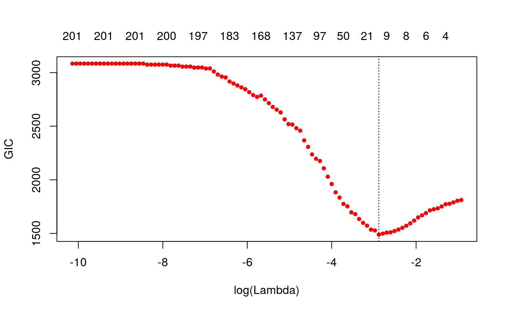
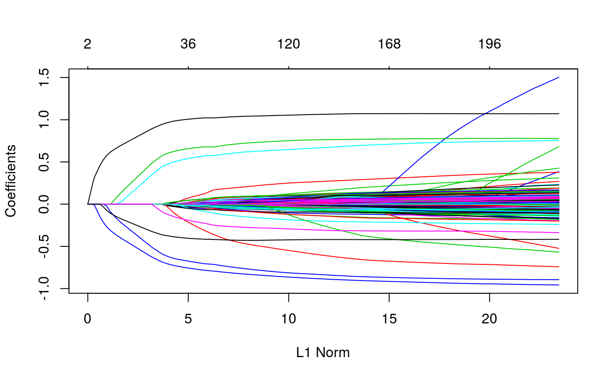

Main function to fit the linear mixed model with lasso or group lasso penalty for a sequence of tuning parameters. This is a penalized regression method that accounts for population structure using either the kinship matrix or the factored realized relationship matrix
ggmix(x, y, U, D, kinship, K, n_nonzero_eigenvalues, n_zero_eigenvalues, estimation = c("full", "low"), penalty = c("lasso", "gglasso"), group, penalty.factor = rep(1, p_design), lambda = NULL, lambda_min_ratio = ifelse(n_design < p_design, 0.01, 1e-04), nlambda = 100, eta_init = 0.5, maxit = 100, fdev = 1e-20, standardize = FALSE, alpha = 1, thresh_glmnet = 1e-08, epsilon = 1e-04, verbose = 0)
| x | input matrix, of dimension n x p; where n is the number of observations and p are the number of predictors. |
|---|---|
| y | response variable. must be a quantitative variable |
| U | left singular vectors corresponding to the non-zero eigenvalues
provided in the |
| D | non-zero eigenvalues. This option is provided to the user should
they decide or need to calculate the eigen decomposition of the kinship
matrix or the singular value decomposition of the matrix of SNPs used to
calculate the kinship outside of this function. This may occur, if for
example, it is easier (e.g. because of memory issues, it's easier to
calculate in plink). This should correspond to the non-zero eigenvalues
only. Note that if you are doing an |
| kinship | positive definite kinship matrix |
| K | the matrix of SNPs used to determine the kinship matrix |
| n_nonzero_eigenvalues | the number of nonzero eigenvalues. This argument
is only used when |
| n_zero_eigenvalues | the number of zero eigenvalues. This argument must
be specified when |
| estimation | type of estimation |
| penalty | type of regularization penalty. if |
| group | a vector of consecutive integers describing the grouping of the coefficients |
| penalty.factor | Separate penalty factors can be applied to each coefficient. This is a number that multiplies lambda to allow differential shrinkage. Can be 0 for some variables, which implies no shrinkage, and that variable is always included in the model. Default is 1 for all variables |
| lambda | A user supplied lambda sequence (this is the tuning parameter). Typical usage is to have the program compute its own lambda sequence based on nlambda and lambda.min.ratio. Supplying a value of lambda overrides this. WARNING: use with care. Do not supply a single value for lambda (for predictions after CV use predict() instead). Supply instead a decreasing sequence of lambda values. glmnet relies on its warms starts for speed, and its often faster to fit a whole path than compute a single fit. |
| lambda_min_ratio | Smallest value for lambda, as a fraction of lambda.max, the (data derived) entry value (i.e. the smallest value for which all coefficients are zero). The default depends on the sample size nobs relative to the number of variables nvars. If nobs > nvars, the default is 0.0001, close to zero. If nobs < nvars, the default is 0.01. A very small value of lambda.min.ratio will lead to a saturated fit in the nobs < nvars case. |
| nlambda | the number of lambda values - default is 100. |
| eta_init | initial value for the eta parameter, with \(0 < \eta < 1\) used in determining lambda.max and starting value for fitting algorithm. |
| maxit | Maximum number of passes over the data for all lambda values; default is 10^2. |
| fdev | Fractional deviance change theshold. If change in deviance between adjacent lambdas is less than fdev, the solution path stops early. factory default = 1.0e-5 |
| standardize | Logical flag for x variable standardization, prior to fitting the model sequence. The coefficients are always returned on the original scale. Default is standardize=FALSE. If variables are in the same units already, you might not wish to standardize. |
| alpha | The elasticnet mixing parameter, with \(0 \leq \alpha \leq 1\). alpha=1 is the lasso penalty, and alpha=0 the ridge penalty. |
| thresh_glmnet | Convergence threshold for coordinate descent for updating beta parameters. Each inner coordinate-descent loop continues until the maximum change in the objective after any coefficient update is less than thresh times the null deviance. Defaults value is 1E-7 |
| epsilon | Convergence threshold for block relaxation of the entire parameter vector \(\Theta = ( \beta, \eta, \sigma^2 )\). The algorithm converges when $$crossprod(\Theta_{j+1} - \Theta_{j}) < \epsilon$$. Defaults value is 1E-7 |
| verbose | display progress. Can be either 0,1 or 2. 0 will not display any progress, 2 will display very detailed progress and 1 is somewhere in between. Default: 0. |
Friedman, J., Hastie, T. and Tibshirani, R. (2008) Regularization Paths for Generalized Linear Models via Coordinate Descent, http://www.stanford.edu/~hastie/Papers/glmnet.pdf Journal of Statistical Software, Vol. 33(1), 1-22 Feb 2010 http://www.jstatsoft.org/v33/i01/
Yang, Y., & Zou, H. (2015). A fast unified algorithm for solving group-lasso penalize learning problems. Statistics and Computing, 25(6), 1129-1141. http://www.math.mcgill.ca/yyang/resources/papers/gglasso.pdf
data(admixed) fitlmm <- ggmix(x = admixed$x, y = admixed$y, kinship = admixed$kin, estimation = "full") gicfit <- gic(fitlmm) coef(gicfit, type = "nonzero")#> 1 #> (Intercept) -0.26684191 #> X336 -0.67986393 #> X7638 0.43403365 #> X1536 0.93994982 #> X1943 0.56600730 #> X2849 -0.58157979 #> X56 -0.08244685 #> X4106 -0.35939830 #> eta 0.26746240 #> sigma2 0.98694300predict(gicfit, newx = admixed$x)[1:5,,drop=FALSE]#> 1 #> id1 -1.3061041 #> id2 0.2991654 #> id3 -2.3453664 #> id4 -0.4486012 #> id5 -1.3895793plot(gicfit)plot(fitlmm)